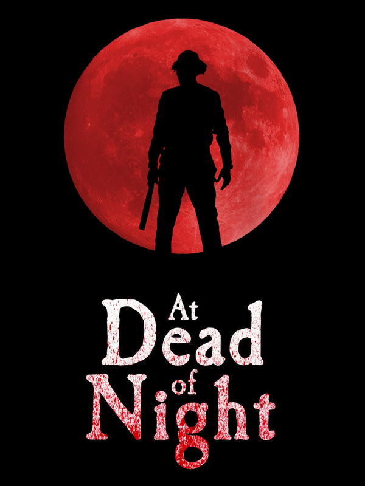

At Dead of Night
At Dead of Night
Details
|  | |
| Playtime | Not Played |
| Last Activity | Never |
| Added | 2025-10-02 9:20:53 |
| Modified | 2025-12-19 11:05:13 |
| Completion Status | Not Played |
| Library | Steam |
| Source | Steam |
| Platform | PC (Windows) |
| Release Date | 2020-11-19 |
| Community Score | 72 |
| Critic Score | |
| User Score | |
| Genre | Adventure Indie Strategy |
| Developer | Baggy Cat Ltd |
| Publisher | Baggy Cat Ltd |
| Feature | Single Player |
| Links | Steam Official Website Twitch YouTube Community Wiki |
| Tag | Atmospheric Cinematic Co-op First-Person FMV Gothic Horror Indie Investigation Multiplayer Mystery Point & Click Real Time Tactics RPG Singleplayer Story Rich Strategy Supernatural Survival Horror Tactical |
Description
At Dead Of Night is part horror film, part horror game and part ghost hunt. It seamlessly blends live-action and graphics to create a unique immersive horror experience like no other.
Maya is a student trapped in a remote hotel run by a psychopath called Jimmy Hall. Jimmy has tied up Maya's friends and locked them in their rooms, with evil intentions. Maya has managed to escape, but Jimmy is on the prowl looking for her. However, to get him to release her friends, Maya must uncover Jimmy's dark secret. Using an ancient ghost voice receiver she finds, Maya must communicate with the ghosts of Jimmy's past, who materialise around the hotel and gradually reveal their story.
BETA options
Right click on the game in your library, then go to Properties > Betas, where you'll find two alternative versions of the game, one specifically for Steam Deck and one updated for 2024 - use this if you have any issues with the default download.
OUR OTHER GAMES
If you're into murder, filthy liars and spooky cults, why not try our other game Contradiction - Spot The Liar - check out our home page at for more info.
AUDIO LATENCY
Because of the way sound is synced to the video in this game, some users may notice some audio latency, affecting lip-sync. This can be improved a lot in Windows 10/11 - not just in this game but lots of games - in Windows 11 by navigating to System > Sound > More sound settings > Speakers or headphones (on the Playback tab) > Properties > Advanced tab, then unticking the ‘Give exclusive mode applications priority' option.
REVIEWERS!
Due to the very high number of requests for review keys we now have a limit of a single key per request.
MERCH!
We've added some new ADoN designs to our RedBubble page - check them out on our website